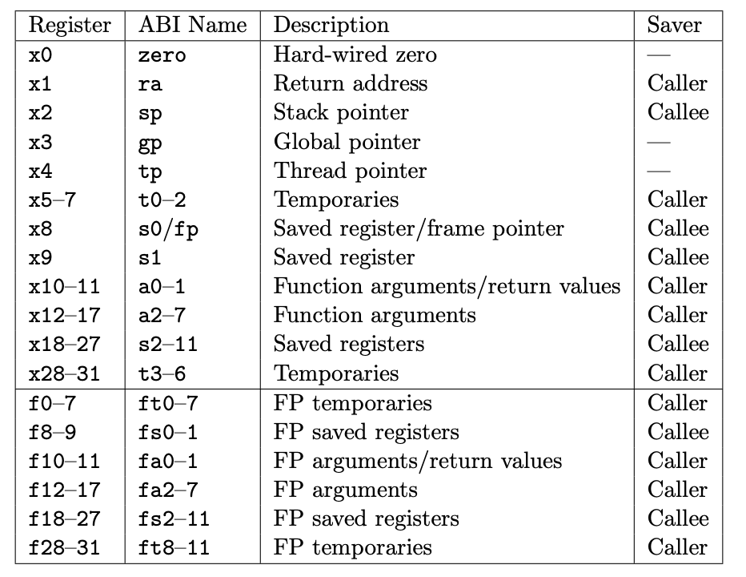
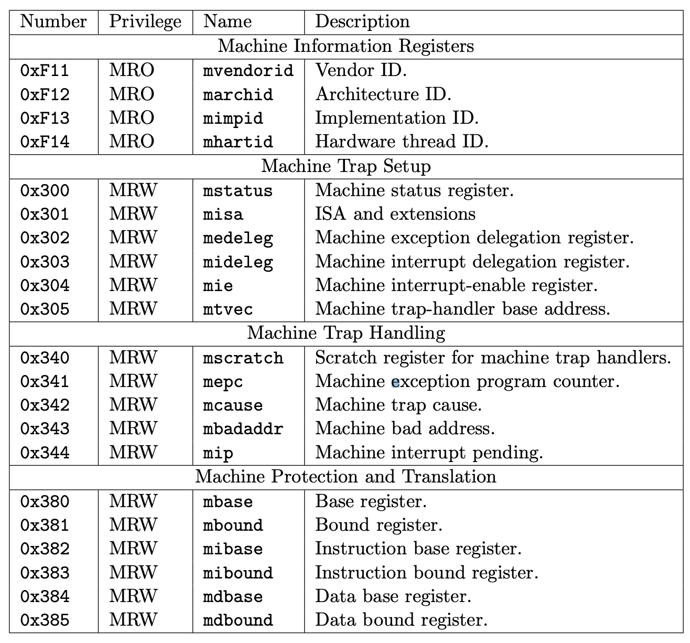

背景
回顾 “什么是操作系统”
- 进程
- 操作系统中的对象
- everything is a file
- file descriptors
- API (系统调用)
进程 = 状态机
- 内存
- 寄存器
- 系统调用
本次课内容与目标
理解一个真正的 “操作系统” 上的进程是什么样的
- RISC-V 选讲
- xv6 中的程序
- xv6 的初始化
- xv6 进程的实现
复习：状态机的虚拟化
状态机：$(M, R)$
进程 = 状态机
- $M$ 是由虚拟地址空间控制的
- $R$ (进程可见的寄存器)
操作系统
- 直接管理物理内存和所有硬件设备
- 在内存中创建很多 “对象”
- 由中断/异常驱动
- 将一个状态机 $(M, R)$ 加载到 CPU 执行
xv6-riscv 用户态进程
开始代码阅读 (RTFM!)
RV64 基础
- Hart (hardware thread): 一个执行流
- 寄存器 
- $x_0 = 0$, $x_1-x_{31}$, PC
- 指令后缀
- w: word (32-bit)
- d: double-world (64-bit)
- u: unsigned
- b: byte
- i: immediate
- 指令格式: $rd$ ← $rs_1$, $rs_2$
- load-store architecture (除了 load/store, 指令只操作寄存器)
Hello, RISC-V World
int main() {
printf("Hello, World\n");
}
0000000000000560 :
560: 1141 addi sp,sp,-16
562: 00000517 auipc a0,0x0
566: 13e50513 addi a0,a0,318
56a: e406 sd ra,8(sp)
56c: fe5ff0ef jal ra,550
570: 60a2 ld ra,8(sp)
572: 4501 li a0,0
574: 0141 addi sp,sp,16
576: 8082 ret
Hello, RISC-V World (cont'd)
int f(int a, int b) {
return printf("%d + %d = %d\n", a, b, a + b);
}
000000000000064a :
64a: 00b506bb addw a3,a0,a1
64e: 862e mv a2,a1
650: 85aa mv a1,a0
652: 00000517 auipc a0,0x0
656: 06650513 addi a0,a0,102
65a: bddd j 550
更多的操作系统上的应用程序 (嘿!)
xv6-riscv/user: 大量的用户程序
- system calls
- usys.S
- 使用 ecall 完成 system call
- usys.S
- 系统运行的第一个程序 (操作系统直接硬编码加载)
- initcode.S (在 kernel/proc.c 硬编码了这段代码)
- 其他程序
- echo (例如，从 strcpy 看起)
- ...
xv6-riscv 进程的实现
Firmware 完成的加载
QEMU: 我就是大部分的 Firmware
- QEMU 将 ELF 加载到
0x80000000- xv6 将 entry.S 放在这个位置就行
- Firmware 从
0x1000开始执行- 只有几条指令……
TFSC; TFM
qemu -kernelloads the kernel at0x80000000and causes each CPU to jump therekernel.ldcauses the following code to be placed at0x80000000
Entry Code

Privilege levels
- User (0), Supervisor (1), Hypervisor (2), Machine (3)
- CPU Reset 后处于 Machine Mode (最高权限)
Control and Status Register (CSR)
- 操作系统可见，但用户程序不可见的隐藏状态
- csrr a1, mhartid
- 还有 csrw, csrrw (xchg)
- csrs/csrc (set/clear bits)
进入操作系统代码！
熟悉的 OSLab 味道来了
- 理论上 U + M 就够了，但首先是进入 S-Mode
- 每个 Mode 分别响应中断
- watchdog
- 甚至 triple fault 也不会神秘重启了
- 甚至可以调试 S-Mode
- 每个 Mode 分别响应中断
一系列系统初始化 (不用怕)
w_mepc(main)mret- M-Mode return 带权限切换的跳转- 跳转到 S-Mode 的
main开始执行
- 跳转到 S-Mode 的
初始化操作系统中的对象
就像你们 OSLab0 里的弹球 int x, y;
- 全部都在物理内存里
- 用户进程对这些状态不可见
- 只能通过系统调用和文件描述符访问
xv6 中的一些对象
- cons (console)
- 各种各样的锁对象 (嵌入在其他结构体里)
- 进程对象 proc (进程表)
- 漫长的初始化过程……
第一个进程的加载
userinit()
- 开始调试它吧！
- 硬编码的
user/initcode.S- 直接执行
exec("/init", ["/init", NULL]);
- 直接执行
想调试它？
- 打个断点吧！我们知道它的地址是什么？
- 我发现了 gdb 的一个 bug (也可能是 feature)
- 以及大家都在各种发现 riscv 工具链的 bug……
- 然后进入了 syscall 函数执行
总结
总结
本次课内容与目标
- 借助代码理解 “操作系统也是 C 程序”
- 内存中的对象
- 异常和上下文切换
Take-away messages
- RTFM; RTFSC
纸面上的理解都是片面的